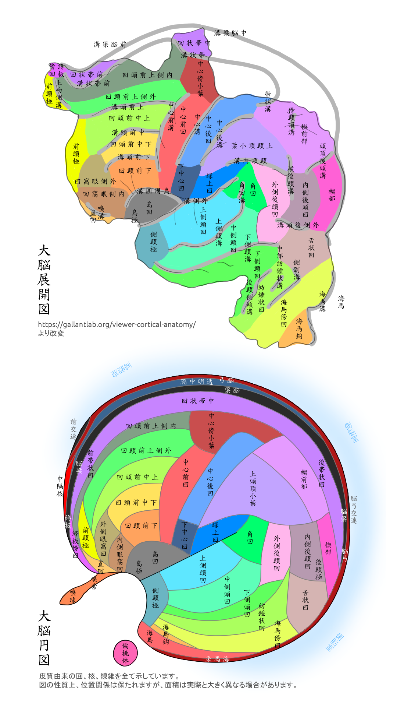

昨日は大脳皮質の本責は、香に端を発する運動を掌る事だと云った。
是は大脳の中心溝よりして以て前の「運動野」で演われる。
然うならば以て後の「感覚野」は何を掌るのかを焉に論じようと思う。
「感覚野」には多くの感覚入力が到く事は勿論。言語や記憶をも宰ると聞く。
詳らかにして言うと、頭頂部には体性感覚と云って、触覚として圧しかた、温かさ、冷かさに覚く処が有る。それより而て後ろは触覚の統合を演う。
少し歴んで後頭極には一次視覚野が有る。目に映る色の境を究め、心に象り、動きを計るに、諸を背側路と腹側路と両つの経路においてする事は知ってゐる者も多かろう。背側路は歴ばした所を還り、更に新聞では背側後帯状回、脳梁膨大後部皮質と内側を流れ、海馬に到って環境を識る事に与するとも謂れている。背側後帯状回は宇の中での躰の在り所を究める事に関かる。之に対して、腹側後帯状回は面影を判ずる事に係うと謂うから、外側の背側路、腹側路と相対うのでは𛂰いかと聞くが、生憎この話の緒には出典が無かったので以て先は語らないことにしよう。
腹側路の後には側頭葉が有り、依然面を判じたり、物を分ったりするが、加之物や面を憶える事をも且つ掌るとも謂う。曰く、側頭葉の極邇くに創れば、詞の豊かな意を失ってしまうそうだ。例えば初めは諺の意を解せ𛂰くなり、或は漢字の種々の訓みを忘れ、軈て一々ケ々の詞の意味を皆失ってしまう如な症である。是をば語義性失語と謂う。
然而て何より、側頭葉の内側には海馬が有り、海馬が憶えを司る事には未だ異論がない。海馬を失した患者のヘンリイが、事や話を憶えら𛂜𛂰くなった事を知ら𛂰い者はゐ無いだろう。
しかし何う為て「感覚野」の末が憶えを司るのだろうか。只だ脳の外観だけを見ていても中々解るまい。巷の画には、海馬を中脳の核等と並べて画く者が多いから、動もすれば「感覚野」ではなく「辺縁系」なんだ、別者なんだと以為う者が有るかも知れ𛂰いが、然うではない。海馬は歴とした皮質の一部であり、切展げると好く分る。
云何だろう。左端は嗅覚野で中央の運路は左へ逆行くが腹側路は右へ、聴覚野も右下へ、全ての感覚が右へ進んでいる如に看える。然而て全ての感覚が輳まる所こそ海馬であれ。「運動野」に於いて嗅覚が其の緒となってゐた若に、「感覚野」に於いては海馬が其の終であり、感覚という業の妙を司っているのでは𛂰いだろうか。然うだと定ると覚きと憶えとが同じ部に於いてするのは怪しい事に思えるが、其れ于に古訓を温ねれば、妙哉、孰れも「おぼゆ」と訓えてゐるのである。
是は我が敢えて古今の訓みを不断に用いる所以でもある。浮世には那んでも何んでも猶も知ったような熟語を用い、逐語訳に戦か𛂰、外来の詞を痴れて嘯く輩が多いが、真に詞の意を心得る者は古来の詞を以て凡そ足りるのである。熟語を用いる者は寧ろ其の無智を愧ず須きだ。
説教になって収ったので今日は是れまでとしよう。